Гид по странице маникюра
Тренды маникюра 2026–2027
Минимализм, нюдовые оттенки, яркие акценты и самые популярные идеи сезона.
Идеи маникюра
Французский, нюдовый, красный, летний, зимний маникюр, а также идеи для коротких и длинных ногтей.
Уход за ногтями
Советы по укреплению ногтей, профилактике ломкости и ежедневному уходу.
Инструменты для маникюра
Базовый набор инструментов для домашнего и профессионального ухода за ногтями.
Средства для маникюра
Лаки, базы, топы, масла для кутикулы и продукты для укрепления ногтей.
Распространённые ошибки
Ошибки, которые ослабляют ногти, повреждают кутикулу и ухудшают их состояние.
Педикюр и уход за стопами
Советы по уходу за ногтями на ногах и поддержанию здоровья стоп.
Найти салон красоты
Подберите салон красоты в Молдове для маникюра, педикюра и комплексного ухода за руками и ногтями.
💅 Тренды маникюра 2026–2027
Тренды маникюра постоянно меняются, но главный акцент последних сезонов — естественность, аккуратность и индивидуальный стиль. Популярность набирают как минималистичные дизайны, так и яркие сезонные решения.
Вдохновляйтесь актуальными идеями и выбирайте варианты, которые подойдут именно вашему образу и образу жизни.
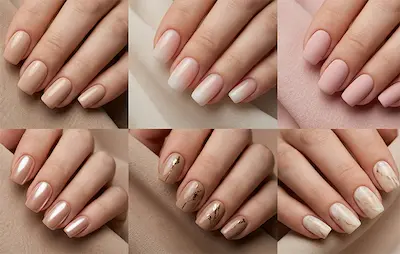
🤍 Нюдовый маникюр
Натуральные бежевые, молочные и розовые оттенки остаются одним из самых востребованных вариантов.
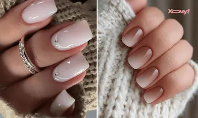
✨ Минимализм
Тонкие линии, микро-дизайн, небольшие акценты и лаконичные детали.
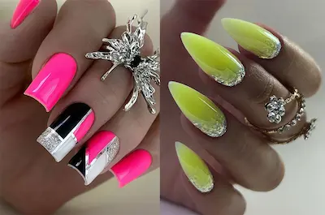
🌈 Яркие цвета
Сочные оттенки, цветные акценты и необычные сочетания снова становятся популярными.
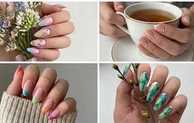
🌸 Весенние идеи
Нежные пастельные оттенки, цветочные элементы и лёгкие дизайны.
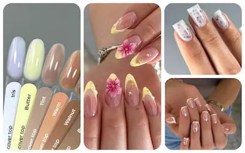
☀️ Летний маникюр
Яркие покрытия, фруктовые мотивы и насыщенные цвета.
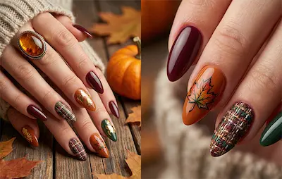
🍂 Осенние оттенки
Коричневые, карамельные, бордовые и глубокие нюдовые тона.
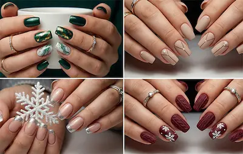
❄️ Зимний маникюр
Холодные оттенки, серебряные элементы и праздничный дизайн.
💅 Идеи маникюра
Маникюр давно стал способом самовыражения и важной частью ежедневного ухода за собой. Выбор дизайна зависит от длины ногтей, образа жизни и личных предпочтений.
Ниже собраны популярные идеи маникюра, которые остаются актуальными независимо от сезона и подходят как для повседневной носки, так и для особых случаев.
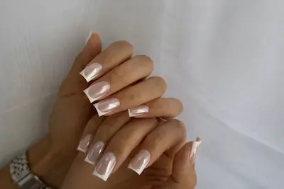
🤍 Французский маникюр
Классический френч и современные цветные вариации, которые подходят практически под любой стиль.
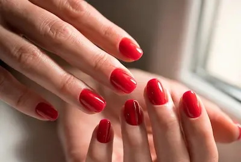
❤️ Красный маникюр
Один из самых популярных вариантов, который одинаково хорошо подходит для повседневного и вечернего образа.
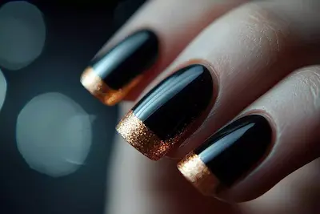
🖤 Чёрный маникюр
Элегантный и универсальный дизайн, который отлично сочетается как с минимализмом, так и с декоративными элементами.
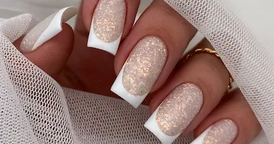
✨ Маникюр с блёстками
Идеальный вариант для праздников, мероприятий и создания ярких акцентов.
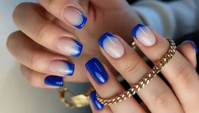
💅 Маникюр на короткие ногти
Практичные и аккуратные варианты, которые комфортно носить каждый день.
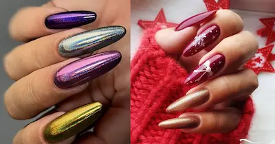
🌸 Маникюр на длинные ногти
Дизайны, позволяющие экспериментировать с формами, рисунками и декоративными элементами.
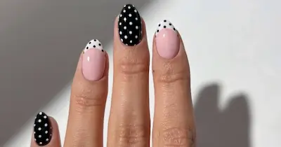
🎨 Маникюр с рисунками
Цветочные мотивы, абстракция, геометрия и другие варианты художественного оформления ногтей.
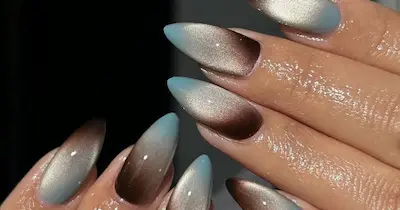
💍 Маникюр для особых случаев
Идеи для свадеб, праздников, фотосессий, торжеств и важных мероприятий.
Уход за ногтями: как сохранить их здоровыми и крепкими
Красивый маникюр начинается не с дизайна, а со здоровых и ухоженных ногтей. Регулярный уход помогает предотвратить ломкость, расслоение и сухость кожи вокруг ногтей.
Даже самый простой домашний уход способен заметно улучшить состояние ногтей и продлить аккуратный внешний вид маникюра.
- Увлажнение кутикулы — ежедневно используйте масло или питательный крем
- Правильная длина — подпиливайте ногти регулярно, избегая сильного укорачивания
- Защита рук — используйте перчатки при уборке и контакте с бытовой химией
- Укрепляющие средства — применяйте базы и покрытия для ослабленных ногтей
- Сбалансированное питание — витамины и достаточное количество белка помогают поддерживать здоровье ногтей
Если ногти стали ломкими, тонкими или начали расслаиваться, стоит временно сократить использование агрессивных покрытий и уделить больше внимания восстановлению и уходу.
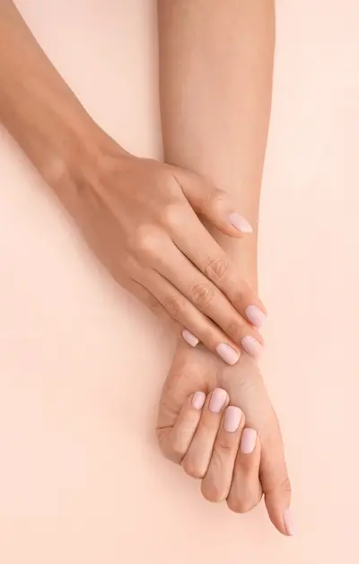
Инструменты для маникюра: что понадобится новичку
Независимый обзор. Продукты не спонсируются.
*Данный материал является независимым редакционным обзором и
не спонсируется производителем или продавцом продукта.
*Все названия брендов, товарные знаки и наименования продукции
принадлежат их законным правообладателям и используются
исключительно в информационных и редакционных целях.
*Представленная информация отражает мнение автора и не
является официальной рекомендацией производителя.
*Ссылки приведены в ознакомительных целях. При наличии
партнёрства здесь может быть размещена прямая ссылка на
продукт.
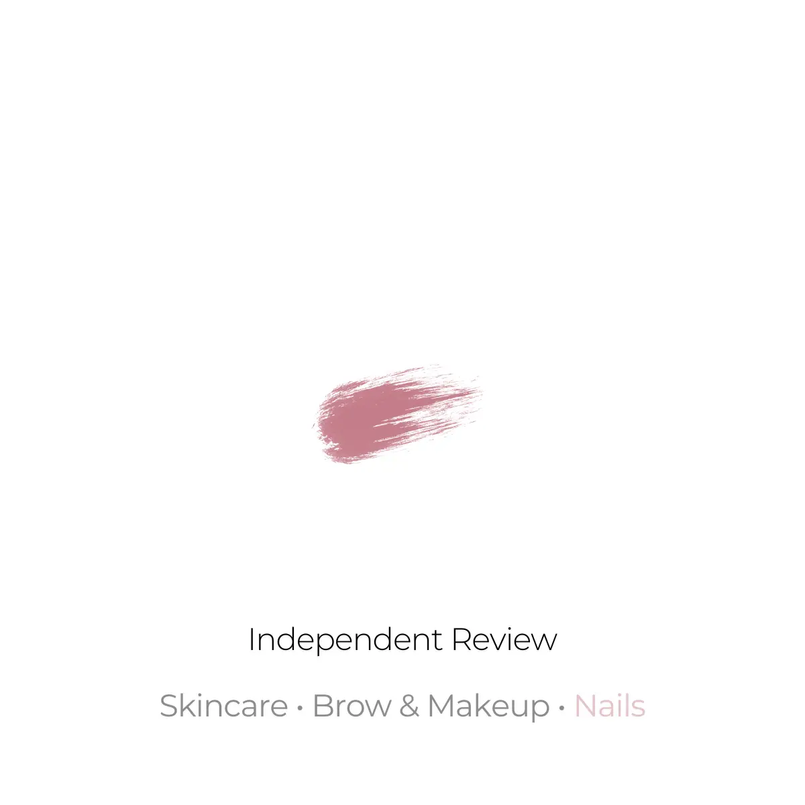
Для аккуратного и безопасного маникюра не обязательно покупать профессиональное оборудование. Достаточно иметь базовый набор инструментов, который поможет поддерживать ногти в ухоженном состоянии.
Пилка для ногтей
Используется для придания формы ногтям. Для натуральных ногтей лучше выбирать мягкие пилки с абразивностью 180–240 грит.
Баф
Помогает аккуратно выровнять поверхность ногтевой пластины и подготовить её к нанесению покрытия.
Пушер для кутикулы
Позволяет бережно отодвигать кутикулу без повреждения кожи вокруг ногтя.
Маникюрные ножницы или кусачки
Используются для удаления заусенцев и аккуратной обработки кутикулы.
Щётка для ногтей
Помогает удалить пыль после опила и поддерживать чистоту во время работы.
Масло для кутикулы
Увлажняет кожу вокруг ногтей и помогает сохранить ухоженный вид рук.
Начинайте с минимального набора инструментов и выбирайте качественные аксессуары — это сделает маникюр более безопасным и комфортным.
Средства для маникюра: базовый уход и подготовка ногтей
Независимый обзор. Продукты не спонсируются.
*Данный материал является независимым редакционным обзором и
не спонсируется производителем или продавцом продукта.
*Все названия брендов, товарные знаки и наименования продукции
принадлежат их законным правообладателям и используются
исключительно в информационных и редакционных целях.
*Представленная информация отражает мнение автора и не
является официальной рекомендацией производителя.
*Ссылки приведены в ознакомительных целях. При наличии
партнёрства здесь может быть размещена прямая ссылка на
продукт.
Средства для маникюра помогают не только улучшить внешний вид ногтей, но и продлить стойкость покрытия, а также сохранить здоровье ногтевой пластины.
Ремувер для кутикулы
Размягчает кутикулу и облегчает её удаление без травмирования кожи.
База под лак
Создаёт защитный слой и улучшает сцепление цветного покрытия с ногтем.
Укрепляющие средства
Помогают восстановить слабые и ломкие ногти при регулярном использовании.
Даже простой уход с базовыми средствами делает маникюр более аккуратным, стойким и профессиональным по виду.
Распространённые ошибки при маникюре
Практические советы. Помогает избежать повреждения ногтей и
кожи.
*Рекомендации основаны на базовой практике маникюра и уходе за
ногтями.
Слишком агрессивное опиливание ногтей
Использование грубых пилок или неправильное движение может привести к расслоению ногтевой пластины.
Лучше использовать мягкие пилки (180–240 грит) и двигаться в одном направлении.
Срезание кутикулы «в ноль»
Полное удаление кутикулы может травмировать кожу и ускорить её рост.
Безопаснее аккуратно отодвигать кутикулу и удалять только ороговевшую часть.
Игнорирование обезжиривания ногтя
Если не обезжирить ногтевую пластину перед покрытием, лак или гель-лак будет плохо держаться.
Обязательно использовать обезжириватель или спиртовой раствор перед базой.
Слишком толстый слой покрытия
Толстый слой лака или базы долго сохнет и быстрее скалывается.
Лучше наносить 2–3 тонких слоя вместо одного плотного.
Пренебрежение бафом
Без лёгкой шлифовки ногтевой поверхности покрытие может плохо сцепляться.
Баф нужно использовать аккуратно, только для снятия глянца, не стачивая ноготь.
Использование старых или изношенных инструментов
Тупые кусачки и пилки повреждают ноготь и делают работу менее аккуратной.
Инструменты нужно регулярно менять или дезинфицировать.
Отсутствие ухода после маникюра
Без масла для кутикулы и увлажнения кожа вокруг ногтей быстро становится сухой.
Регулярное использование масла помогает сохранить ухоженный вид рук.
Педикюр и уход за стопами: как сохранить здоровье и ухоженный вид
Практические рекомендации. Подходит для домашнего и базового
салонного ухода.
*Информация носит ознакомительный характер и основана на
стандартных бьюти-практиках.
Зачем нужен регулярный педикюр
Педикюр — это не только эстетика, но и здоровье стоп. Регулярный уход помогает предотвратить сухость, трещины и врастание ногтей.
Оптимальная частота: раз в 2–4 недели в зависимости от состояния кожи.
Очищение и размягчение кожи стоп
Перед обработкой важно распарить или использовать специальные средства для размягчения огрубевшей кожи.
Это облегчает удаление натоптышей и делает процедуру безопаснее.
Удаление огрубевшей кожи
Используются пилки, тёрки или аппараты для педикюра. Главное — не переусердствовать, чтобы не травмировать кожу.
Слишком агрессивное удаление может усилить огрубение кожи в будущем.
Обработка ногтей на ногах
Ногти подстригаются прямо, без закругления углов — это снижает риск врастания.
Для обработки используйте кусачки и пилку с мягким абразивом.
Увлажнение и восстановление
После процедуры важно восстановить кожу с помощью крема или масла для стоп.
Регулярное увлажнение предотвращает трещины и сухость пяток.
Домашний уход между процедурами
Ежедневный уход помогает поддерживать результат педикюра дольше.
- используйте крем для стоп каждый вечер
- при необходимости применяйте пемзу или мягкую пилку
- носите удобную, дышащую обувь
Распространённые ошибки
Слишком агрессивное удаление кожи, редкий уход и игнорирование увлажнения могут ухудшить состояние стоп.
Главное правило — регулярность и мягкое воздействие, а не агрессивная обработка.
Ищете салон красоты для маникюра и педикюра?
Качественный маникюр и педикюр — это не только красивый внешний вид, но и правильный уход за ногтями, кутикулой и кожей рук и стоп. Выбор хорошего салона помогает сделать процедуры безопасными, комфортными и долговечными.
Найдите салон красоты или профессионального мастера рядом с вами и запишитесь на процедуры, которые помогут поддерживать здоровье ногтей, аккуратный внешний вид рук и ухоженное состояние стоп в любое время года.
Перед записью обратите внимание на соблюдение санитарных норм, стерилизацию инструментов, опыт мастеров, качество используемых материалов и отзывы клиентов.
Найти салон красотыЧасто задаваемые вопросы
Как часто нужно делать маникюр и педикюр?
В среднем маникюр рекомендуется обновлять каждые 2–3 недели, а педикюр — каждые 3–5 недель. Частота зависит от скорости роста ногтей, состояния кожи и выбранного типа покрытия.
Что входит в классический маникюр и педикюр?
Обычно процедура включает обработку ногтей, работу с кутикулой, придание формы, удаление огрубевшей кожи, полировку и нанесение покрытия при необходимости.
Что лучше выбрать: аппаратный или классический маникюр?
Аппаратный маникюр считается более современным и деликатным способом обработки кожи. Классический маникюр подходит тем, у кого плотная кутикула и выраженные заусенцы.
Можно ли делать маникюр и педикюр одновременно?
Да. Многие салоны предлагают комплексные процедуры, которые позволяют сэкономить время и получить полноценный уход за руками и стопами за один визит.
Как подготовиться к процедуре?
Специальная подготовка не требуется. Достаточно прийти с чистыми руками и ногами, а при наличии старого покрытия заранее уточнить, входит ли его снятие в стоимость услуги.
Как продлить стойкость маникюра?
Используйте перчатки при контакте с бытовой химией, регулярно наносите масло для кутикулы и избегайте использования ногтей в качестве инструмента.
Как правильно ухаживать за стопами дома?
Рекомендуется ежедневно использовать увлажняющий крем, регулярно удалять огрубевшую кожу мягкой пилкой и носить удобную обувь, которая не создаёт избыточного давления.
Как понять, что салон соблюдает правила гигиены?
Хороший салон использует стерилизованные инструменты, одноразовые расходные материалы и соблюдает санитарные нормы. Не стесняйтесь уточнять информацию перед записью.
Можно ли делать маникюр и педикюр при чувствительной коже?
Да. В этом случае важно предупредить мастера заранее, чтобы он выбрал более деликатные техники обработки и щадящие средства ухода.
Что делать, если ногти стали ломкими после покрытия?
Рекомендуется сделать перерыв, использовать укрепляющие средства и не снимать покрытие самостоятельно. При длительной ломкости лучше проконсультироваться со специалистом.